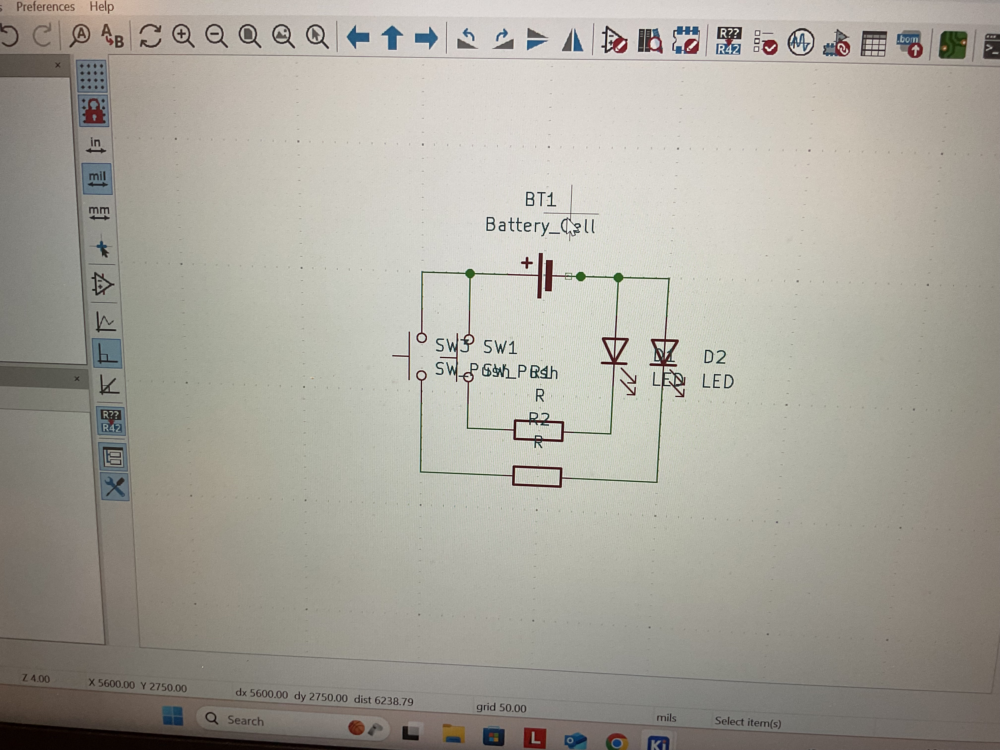
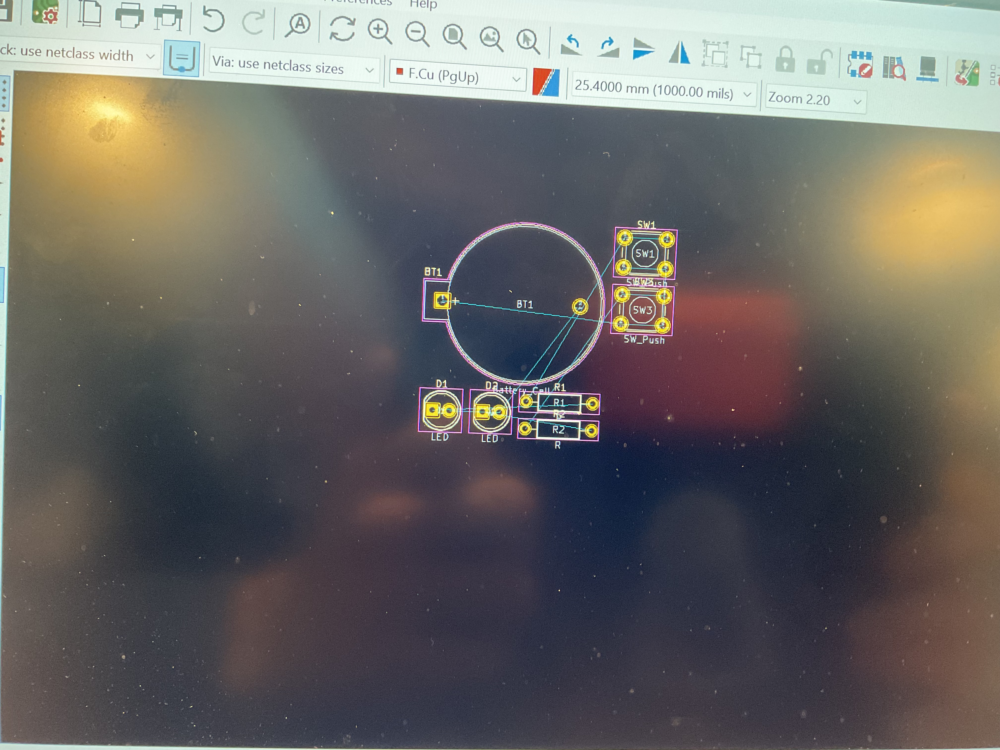
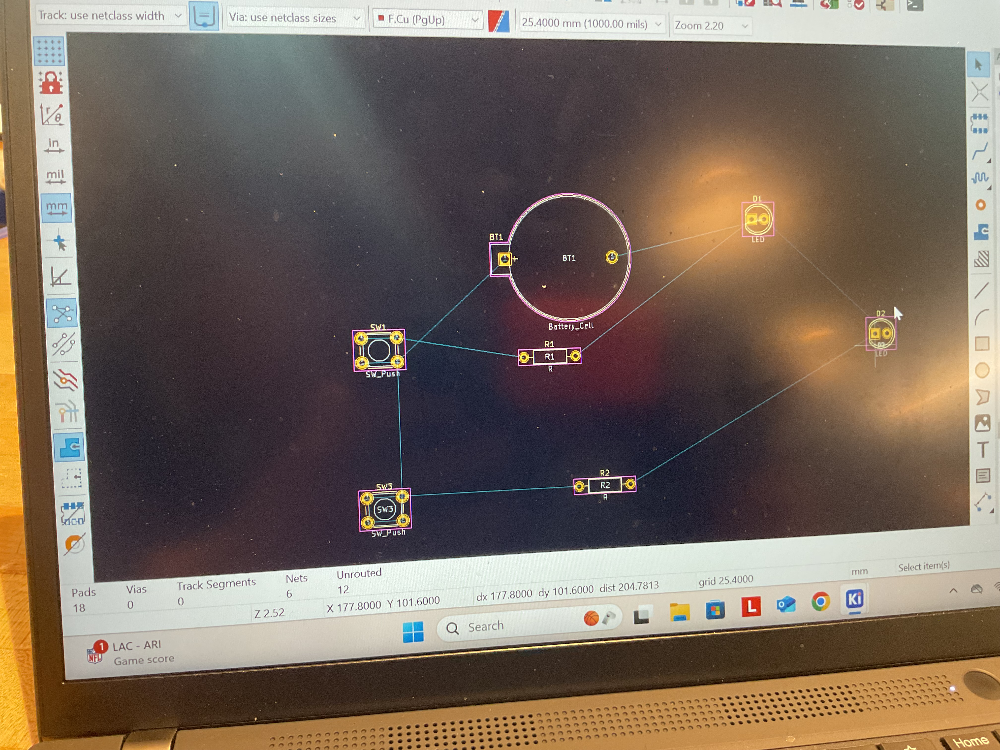
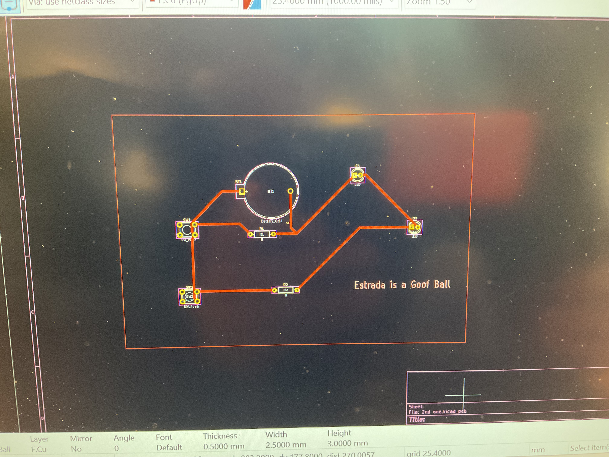

Circuit
Step 1: Using Ki-Cad, we started by getting the battery, resistor, led, and button and putting them onto the file.
Step 2: We rearranged the components and then attached wires to them to connect the components.

Step 3: We linked each component to its real-life model by finding them on amazon.
Step 4: We put the system into the PCB editor.

Step 5: We reprganized the wires to how we needed the ciruit to be in the PCB editor.

Step 6: We added the border, made the wires thicker, and make an engraving on the circuit.
